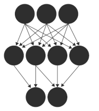

You might find this section useful if you are relatively new to web development. The fastest way to obtain the library in a plug-and-play way if you don't care about developing is through this link to convnet-min.js, which contains the minified library. Alternatively, you can also choose to download the latest release of the library from Github.The file you are probably most interested in is build/convnet-min.js, which contains the entire library. To use it, create a a bare-bones index.html file in some folder and copy build/convnet-min.js to the same folder. Here is some example code to get you started:
<html>
<head>
<title>minimal demo</title>
<!-- CSS goes here -->
<style>
body {
background-color: #FFF; /* example... */
}
</style>
<!-- import convnetjs library -->
<script src="convnet-min.js"></script>
<!-- javascript goes here -->
<script type="text/javascript">
function periodic() {
var d = document.getElementById('egdiv');
d.innerHTML = 'Random number: ' + Math.random()
}
var net; // declared outside -> global variable in window scope
function start() {
// this gets executed on startup
//...
net = new convnetjs.Net();
// ...
// example of running something every 1 second
setInterval(periodic, 1000);
}
</script>
</head>
<body onload="start()">
<div id="egdiv"></div>
</body>
</html>
Here, we are placing both CSS and Javascript into head of the html file, but normally people like to separate these out into different files. Note how the body tag contains an onload attribute which executes the start() method once the file is loaded: Here you can initialize everything (including your network). The function periodic() is wired up to execute every 1000ms.
I recommend you use Chrome as your browser. Drag and drop your index.html into the address bar to load up your local html file! I recommend always keeping your console open: right-click, choose "Inspect Element" and go to the "Console" tab. You can write to this using console.log("test").
In some cases, if you are trying to load images or other data dynamically, you might run into issues with running local html files and cross-origin policies. For example, the MNIST or CIFAR demos will not work locally because they load images dynamically. A simple work-around is to run a dummy local web server in your folder. On Ubuntu for example, cd into it, start up one: python -m SimpleHTTPServer, and then navigate to the local address that python prints for you in your browser to see your files in that folder.
In a classification setting the network is asked to provide a prediction among a fixed set of distinct classes. Lets create a simple 2 layer neural network binary classifier (i.e. two distinct classes) that takes 2-dimensional data points. The first layer of every network must be an 'input' layer in which we declare the size of the input data. ConvNetJS layers are based on Vol class that represents a 3-dimensional volume of numbers. The 3 dimensions are (sx, sy, depth), but if you're not working with images we will always keep sx = 1, sy = 1, and only worry about depth. Therefore, we will declare the size of input volume to be 1x1x2 (out_sx = 1, out_sy = 1, out_depth = 2). The next three layers will be fully connected layers ('fc' for short) of neurons, and the last layer will be a classifer layer (called 'softmax') which outputs probabilities.
var layer_defs = [];
// input layer of size 1x1x2 (all volumes are 3D)
layer_defs.push({type:'input', out_sx:1, out_sy:1, out_depth:2});
// some fully connected layers
layer_defs.push({type:'fc', num_neurons:20, activation:'relu'});
layer_defs.push({type:'fc', num_neurons:20, activation:'relu'});
// a softmax classifier predicting probabilities for two classes: 0,1
layer_defs.push({type:'softmax', num_classes:2});
// create a net out of it
var net = new convnetjs.Net();
net.makeLayers(layer_defs);
// the network always works on Vol() elements. These are essentially
// simple wrappers around lists, but also contain gradients and dimensions
// line below will create a 1x1x2 volume and fill it with 0.5 and -1.3
var x = new convnetjs.Vol([0.5, -1.3]);
var probability_volume = net.forward(x);
console.log('probability that x is class 0: ' + probability_volume.w[0]);
// prints 0.50101
So we see that the network (which is initialized randomly) assigns probability 50.1% to the point [0.5, -1.3] being class 0. Since softmax ensures that probabilities always sum to one, if you printed probability of class 1, you would get 0.49899, or roughly 49.9%. Note that convnetjs.Vol is a 3D volume class that the entire library is based on. It is a very thin wrapper around a simple array of numbers (field .w), but in addition stores the dimensions of the volume: sx (width), sy (height), and depth, and also the gradients (field .dw). In simple non-convolutional networks, the width and height are always simply kept at 1.
Lets now actually provide this as data to the network, saying x should in fact map to 0 with a high probability. We will use a built in Trainer class:
var trainer = new convnetjs.Trainer(net, {learning_rate:0.01, l2_decay:0.001});
trainer.train(x, 0);
var probability_volume2 = net.forward(x);
console.log('probability that x is class 0: ' + probability_volume2.w[0]);
// prints 0.50374
The trainer takes a whole bunch of (optional) parameters, but for now just notice that once we backpropagated the information that x is in fact class 0, the network adjusts its parameters to make that more likely (0.50374, up from 0.50101). To train on an actual dataset, you simply loop through all your points at random and repeatedly backpropagate their true class through the network, which gradually adjusts its weights to make your predictions more likely.
Regression is the task of predicting real-valued outputs, not just probabilities of a fixed number of classes. For example, we could be predicting the height of a person. To set up a regression network, we proceed very similar to the example above, but replace the softmax (classifier) with a regression loss layer:
var layer_defs = [];
layer_defs.push({type:'input', out_sx:1, out_sy:1, out_depth:2});
layer_defs.push({type:'fc', num_neurons:5, activation:'sigmoid'});
layer_defs.push({type:'regression', num_neurons:1});
var net = new convnetjs.Net();
net.makeLayers(layer_defs);
var x = new convnetjs.Vol([0.5, -1.3]);
// train on this datapoint, saying [0.5, -1.3] should map to value 0.7:
// note that in this case we are passing it a list, because in general
// we may want to regress multiple outputs and in this special case we
// used num_neurons:1 for the regression to only regress one.
var trainer = new convnetjs.SGDTrainer(net,
{learning_rate:0.01, momentum:0.0, batch_size:1, l2_decay:0.001});
trainer.train(x, [0.7]);
// evaluate on a datapoint. We will get a 1x1x1 Vol back, so we get the
// actual output by looking into its 'w' field:
var predicted_values = net.forward(x);
console.log('predicted value: ' + predicted_values.w[0]);
Very importantly, notice that the regression loss always expects a LIST when you call the train method (e.g. [0.7]) in this case. It is a common mistake to instead pass in a single number, such as 0.7 alone.